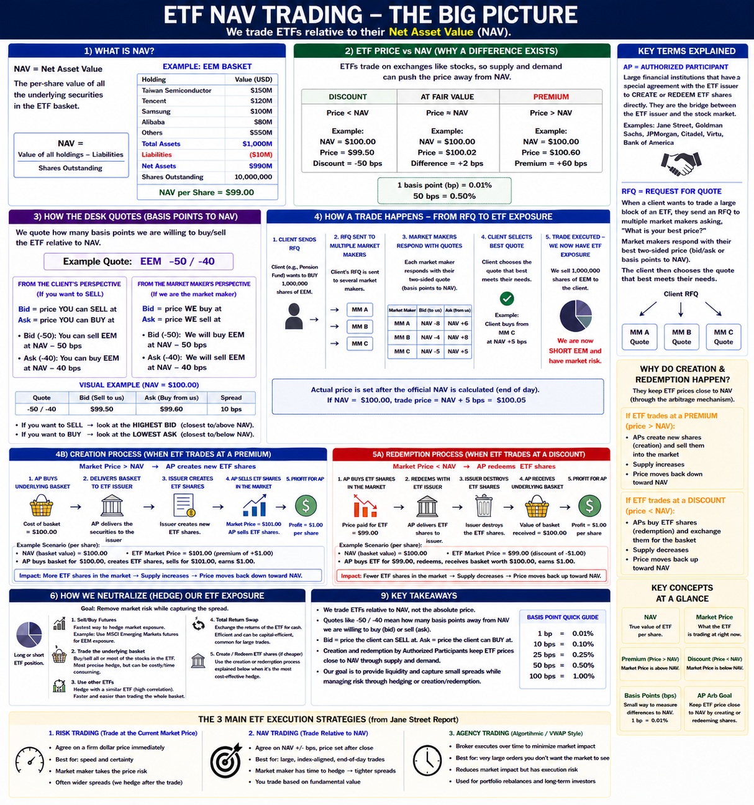
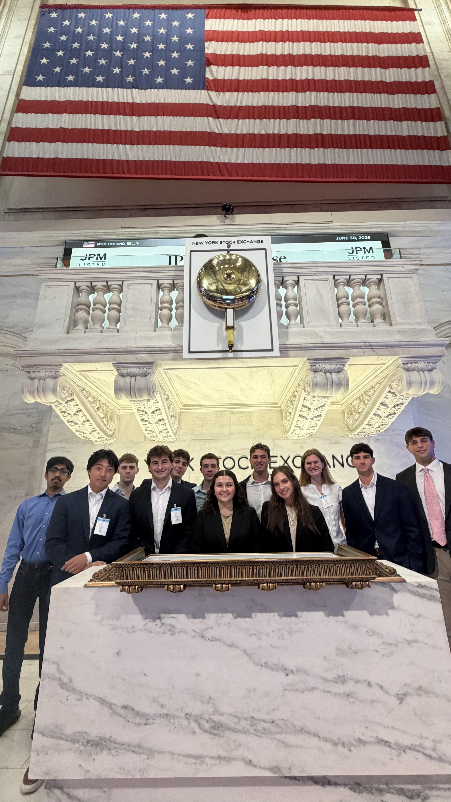

Skills
Microsoft Excel
Financial Analysis
NAV/ETF Analysis
Market Research
Communication
Teamwork
Problem Solving
Time Management
Projects and Experience
ETF NAV Trading Summary
Created an ETF NAV trading summary for a project during my internship at Baycrest to break down NAV pricing, basis point quotes, the trade process, creation and redemption, and different strategies for ETF and hedge execution.

Fed & Inflation Morning Meeting Analysis
My assignment was to research Fed policy, inflation data, Treasury yields, and market expectations in July 2026 to prepare an update for a daily morning meeting during my internship at Baycrest.
View Fed & Inflation ProjectNew York Stock Exchange Experience
Visited the New York Stock Exchange during my internship, where I met Baycrest traders who work on the floor and had the opportunity to experience an IPO.
